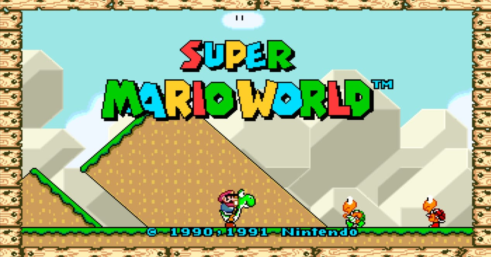
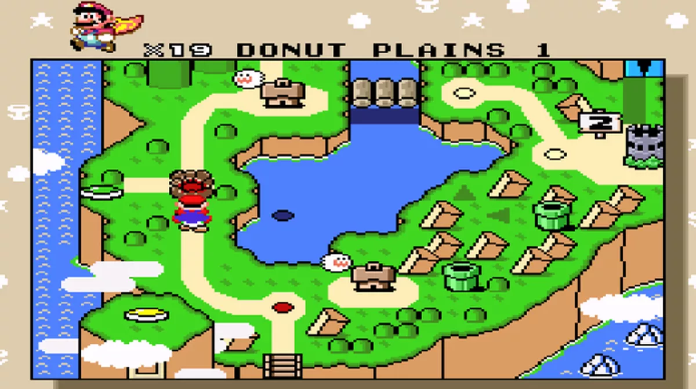
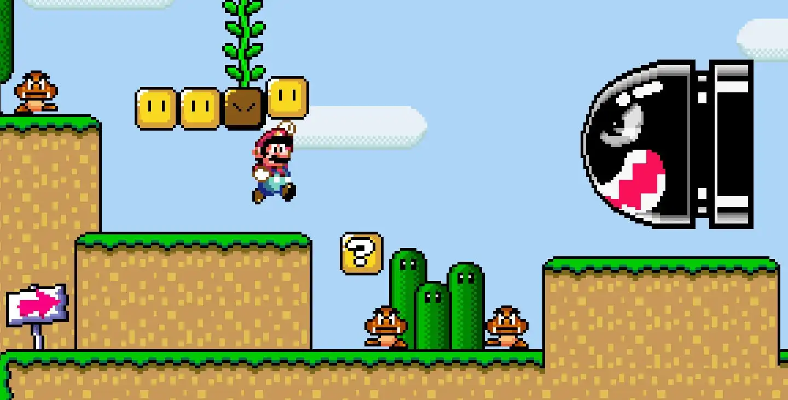
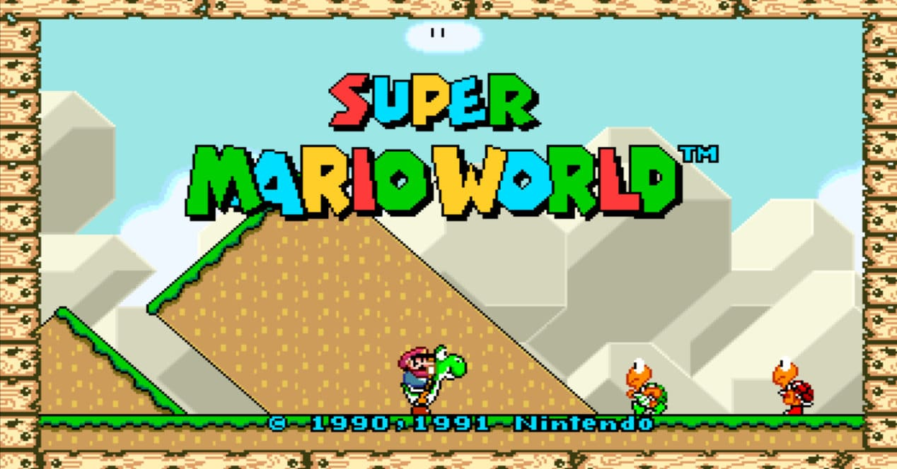
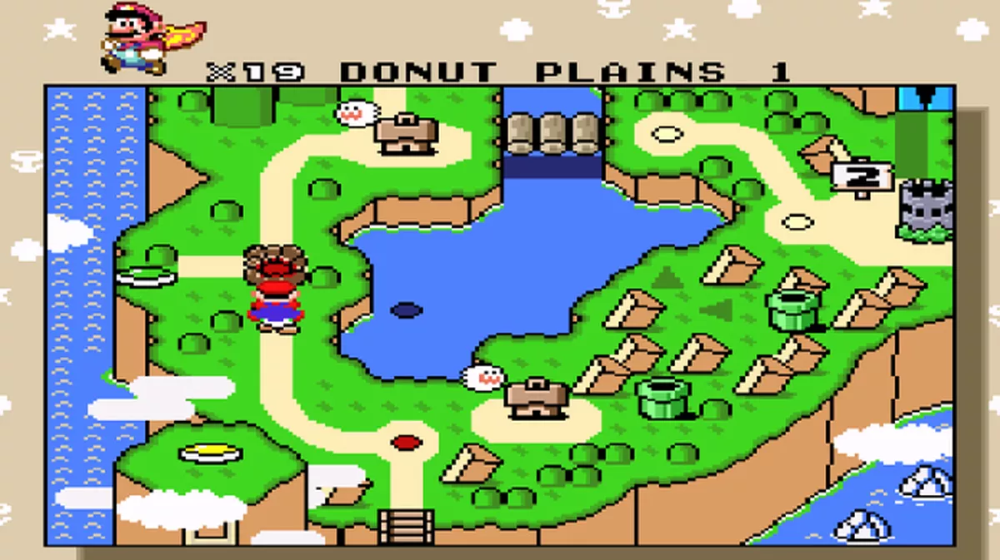
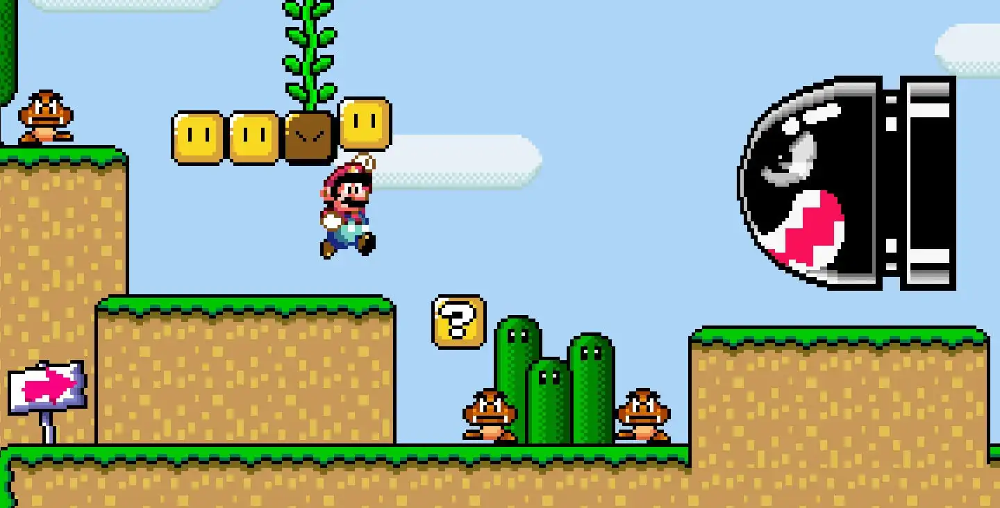
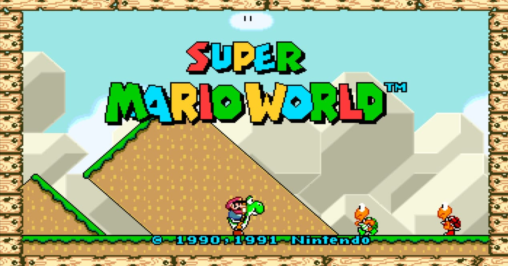
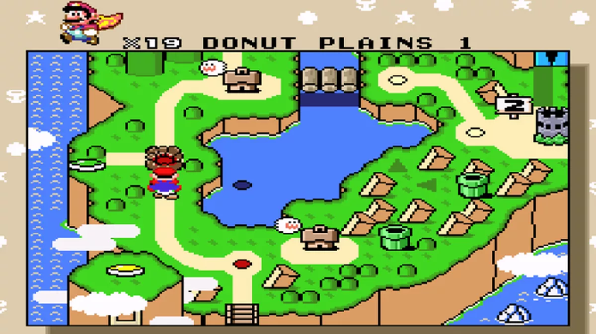
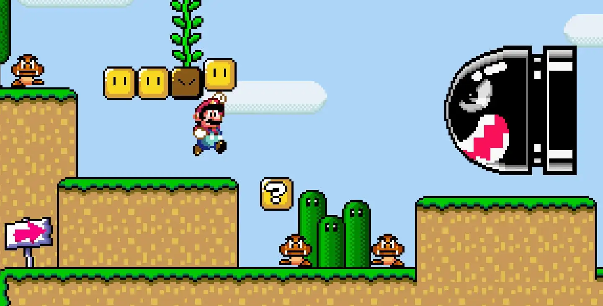
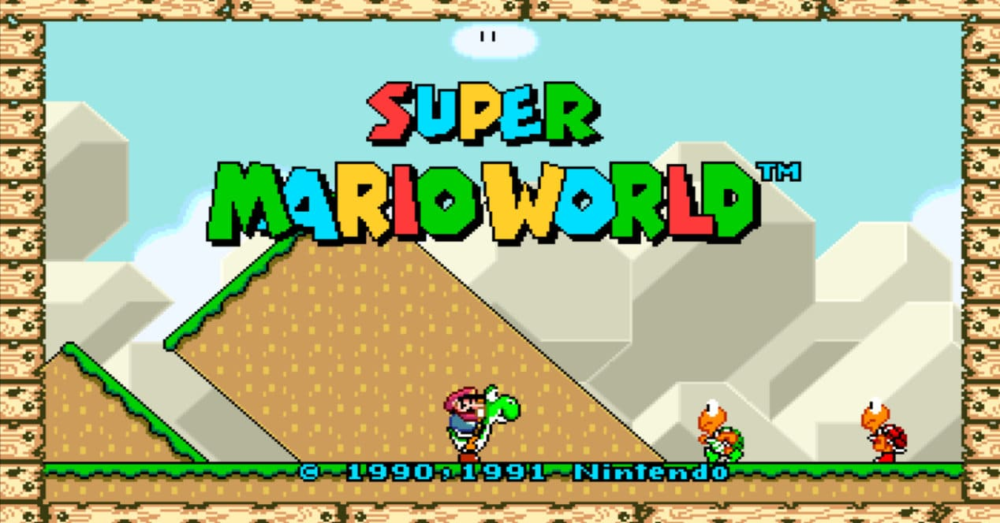
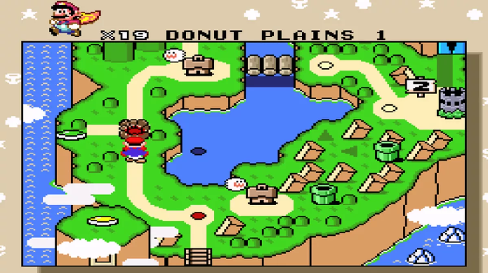
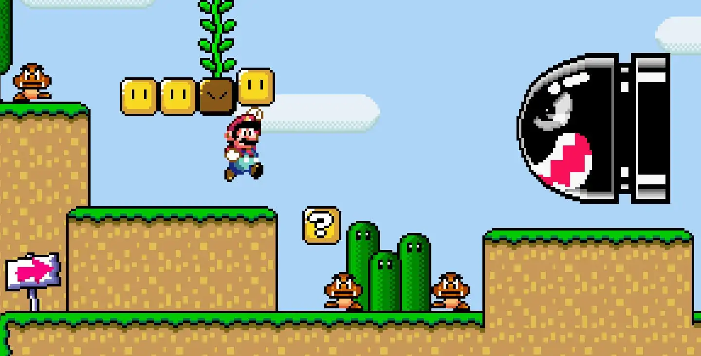
Super Mario World é um jogo eletrônico de plataforma desenvolvido pela Nintendo Entertainment Analysis & Development e publicado pela Nintendo, em 1990, para o console Super Nintendo Entertainment System (SNES). A história segue a jornada de Mario para salvar a Princesa Toadstool e a Dinosaur Land do antagonista Bowser e de seus capangas, os Koopalings. A jogabilidade é semelhante à dos jogos anteriores da série Super Mario: os jogadores controlam Mario ou seu irmão Luigi através de uma série de fases, cujo objetivo é alcançar um portão gigante em seu final. Super Mario World introduz Yoshi, um dinossauro que pode comer inimigos, bem como ganhar habilidades comendo cascas de Koopa Troopas.
Deseja saber mais informações sobre os jogos ? Clique no botão abaixo!
Aqui esta algumas informações sobre os itens dos jogos em animações!

Caio Dias Pereira FHO - Araras